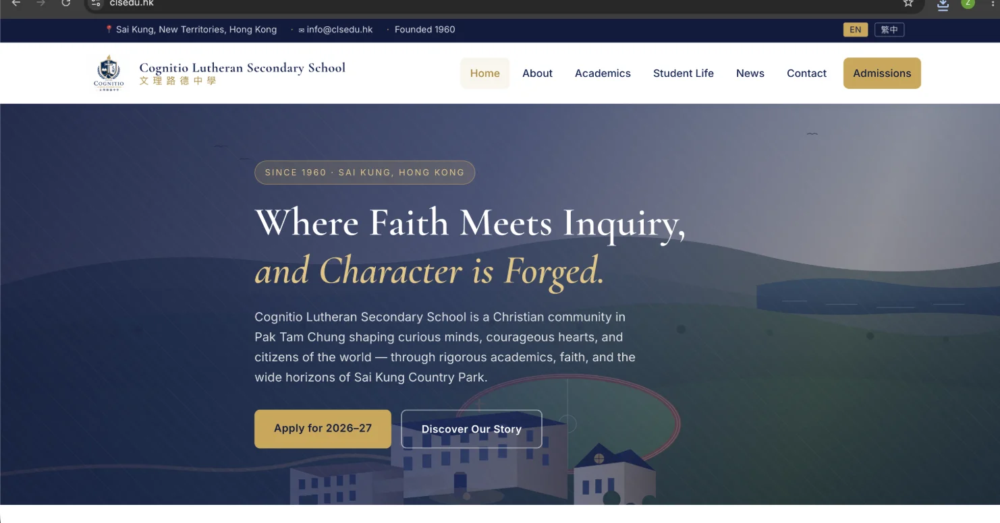

我們尋找的,不只是成績優秀的學生,而是願意認真學習、關心他人、並勇於成長的年輕人。
填妥申請表,並提交最近兩年的成績表、推薦資料及相關證明文件。
獲邀申請者將參與面談,並可安排校園參觀,了解學習氛圍與校園文化。
校方將綜合考慮學業表現、品格、潛質及與學校理念的契合度後作出通知。
我們看重穩定的學習習慣、求知動機與面對挑戰的態度。
尊重他人、有責任感、懂得合作，是文理社群的重要基礎。
我們重視學生的潛力與成長空間，而非只看當下成績。
家庭是否認同學校重視信仰、品格與全人教育的方向。
我們全年設有開放日、校園導賞與個別家庭面談。親身走進校園、看看課室、操場與睿智谷,往往比任何文字更能說明文理是怎樣的地方。
如欲預約,請以電郵與校務處聯絡,我們會安排合適時段。
聯絡校務處
歡迎到訪